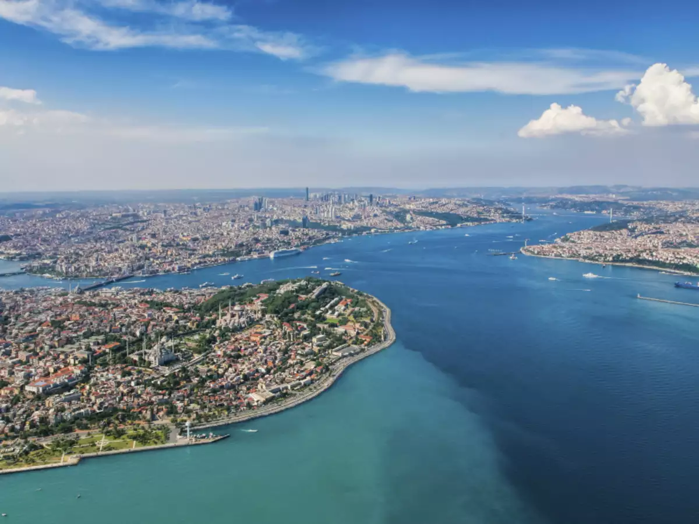
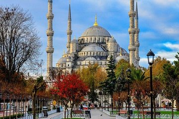

Warum Istanbul?
Eine Stadt mit zwei Seelen
Istanbul ist die einzige Großstadt der Welt, die auf zwei Kontinenten liegt. Der Bosporus teilt sie in einen europäischen und einen asiatischen Teil – und genau das macht sie so einzigartig. Hier treffen byzantinische Kuppeln auf osmanische Minarette, Streetfood-Düfte auf edle Rooftop-Bars und jahrhundertealte Gassen auf moderne Skyline.
Ich war schon mehrmals hier und jedes Mal entdecke ich etwas Neues: einen versteckten Hof in Balat, den Duft von frischem Simit am Morgen oder den Blick von einer Brücke bei Sonnenuntergang.
KARTE
Meine persönliche Istanbul-Karte
Hier findest du meine Lieblingscafés und die wichtigsten Orte auf einen Blick. Klick auf die Marker für kurze Infos.
ORTE
Meine Lieblingsplätze in Istanbul
1. Hagia Sophia & Blaue Moschee
Zwei Ikonen, die sich gegenüberstehen. Die Hagia Sophia war 900 Jahre Kirche, dann 500 Jahre Moschee und ist heute wieder Moschee – ein Gebäude, das die Geschichte der Stadt in Stein erzählt. Direkt daneben die Blaue Moschee mit ihren 20.000 blauen Fliesen.
2. Basilikazisterne (Yerebatan Sarnıcı)
Unter der Stadt liegt ein unterirdischer Wald aus 336 Marmorsäulen. Die Medusa-Köpfe am Boden und das Wasser, das die Lichter spiegelt, erzeugen eine Atmosphäre, die man nirgendwo sonst findet.
3. Galata-Turm & Karaköy
Vom Turm hast du den besten Blick über den Goldenen Horn und den Bosporus. Danach einfach die Gassen von Karaköy und Galata runterschlendern – hier fühlt sich Istanbul am lebendigsten an.
4. Balat & Fener
Bunte Häuser, steile Gassen, Straßenkunst und echte Nachbarschaft. Hier wohne ich am liebsten, wenn ich in Istanbul bin. Weniger Touristen, mehr Seele.
ESSEN
Was du unbedingt probieren musst
Balık Ekmek
Gegrillter Makrelen-Fisch im Brot mit Zwiebeln und Salat – direkt von den Booten in Eminönü. Der Geschmack von Istanbul in einem Sandwich.
Simit + Türkischer Tee
Der sesamebestreute Ring ist das tägliche Brot der Stadt. Am besten frisch vom Straßenverkäufer mit einem Glas Tee.
Türkisches Frühstück (Kahvaltı)
Käse, Oliven, Honig mit Kaymak, Eier, Tomaten, Gurken, Brot… Ein ganzes Tisch voller kleiner Schüsseln. Ein Muss!
Weitere Empfehlungen von mir:
- Midye Dolma – gefüllte Muscheln mit Reis und Zitrone (abends auf der Straße)
- Kumpir – überbackene Kartoffel in Ortaköy
- Baklava – am besten bei Karaköy Güllüoğlu
- Meze + Rakı – abends in einer Meyhane (Kneipe mit Vorspeisen)
GESCHICHTE
Kurz und spannend erzählt
Istanbul war nacheinander Byzantion, Konstantinopel und Istanbul. 330 n. Chr. machte Konstantin der Große sie zur neuen Hauptstadt des Römischen Reiches. 1123 Jahre lang war sie das Zentrum der byzantinischen Welt – bis 1453 Mehmed II. die Stadt eroberte und das Osmanische Reich hier seine Hauptstadt errichtete.
Über 1600 Jahre lang war sie die wichtigste Stadt Europas und des Nahen Ostens. Heute ist sie keine Hauptstadt mehr (das ist Ankara), aber immer noch das pulsierende Herz der Türkei und eine der faszinierendsten Metropolen der Welt.
TIPPS & FAKTEN
Praktisch + Überraschend
Fähre nehmen!
Die günstigste und schönste Art, den Bosporus zu erleben. Eine einfache Überfahrt kostet fast nichts und die Aussicht ist unbezahlbar.
Istanbulkart
Unbedingt holen. Damit fährst du Metro, Tram, Bus und Fähre. Spart Zeit und Geld.
Beste Zeit
April–Juni und September–Oktober. Im Sommer ist es sehr heiß und voll, im Winter oft regnerisch.
Bargeld mitnehmen
Viele kleine Lokale und Straßenverkäufer nehmen nur Cash. Geldautomaten gibt es überall.
Interessanter Fakt
Unter dem Bosporus fließt ein „Unterwasserfluss“ – eine starke Strömung am Grund, die in die entgegengesetzte Richtung läuft.
Geheimtipp
Geh bei Sonnenuntergang auf die Galata-Brücke oder nach Çamlıca auf der asiatischen Seite – der Blick ist unvergesslich.
CAFÉS & LIEBLINGSORTE
Drei Orte, die ich immer wieder aufsuche

FIDA CAFÉ
Mitten in den bunten Gassen von Balat. Hier habe ich an einem Sommerabend draußen gesessen, Fleetwood Mac gehört und das beste Falafel der Stadt gegessen.
Adresse
Balat, Vodina Cd. 7/A, 34087 Fatih/İstanbul

BUHARA FISH & MEAT HOUSE ROOF
Direkt am Großen Basar mit traumhaftem Dachblick. Frischer Fisch, gutes Fleisch und ein Service, der aufpasst.
Adresse
Alemdar, Nuru Osmaniye Cd. No: 5, 34440 Fatih/İstanbul

RÂNA BY TOPAZ
Grüner Garten in Beyoğlu. Hier fühlt man sich wie in einer Oase. Perfekt zum Entspannen mit guter Küche und Shisha.
Adresse
Ömer Avni, İnönü Cd. No:50, 34427 Beyoğlu/İstanbul
GALLERY
Momente, die ich festhalten wollte


